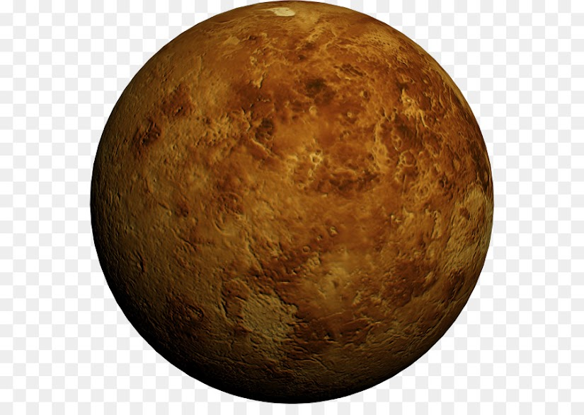

Venus es el segundo planeta del sistema solar en orden de proximidad al Sol y el tercero en cuanto a tamaño en orden ascendente después de Mercurio y Marte. Al igual que Mercurio, carece de satélites naturales. Recibe su nombre en honor a Venus, la diosa romana del amor (gr. Afrodita). Al ser el segundo objeto natural más brillante después de la Luna, puede ser visto en un cielo nocturno despejado a simple vista. Se trata de un planeta interior de tipo rocoso y terrestre, llamado con frecuencia el planeta hermano de la Tierra, ya que ambos son similares en cuanto a tamaño, masa y composición, aunque totalmente diferentes en cuestiones térmicas y atmosféricas (la temperatura media de Venus es de 463,85 ºC). Su órbita es una elipse con una excentricidad de menos del 1%, formando la órbita más circular de todos los planetas; apenas supera la de Neptuno. Su presión atmosférica es 90 veces superior a la terrestre; es, por lo tanto, la mayor presión atmosférica de todos los planetas rocosos del sistema solar. Es de color blanco/amarillento por su atmósfera compuesta mayoritariamente por dióxido de carbono (CO2), ácido sulfhídrico (H2S) y nitrógeno (N2). Pese a situarse más lejos del Sol que Mercurio, Venus posee la atmósfera más caliente del sistema solar; esto se debe a que está principalmente compuesta por gases de efecto invernadero, como el dióxido de carbono, atrapando mucho más calor del Sol. Actualmente carece de agua líquida y sus condiciones en superficie se consideran incompatibles con la vida conocida, aunque en descubrimientos recientes se ha encontrado fosfina en su superficie nebular, una molécula que en la Tierra es generada por microbios, lo que da indicios de una posible existencia de vida.1 No obstante, el Instituto Goddard de Estudios Espaciales de la NASA y otros han postulado que en el pasado Venus pudo tener océanos234 con tanta agua como el terrestre5 y reunir condiciones de habitabilidad planetaria.
Haz click aquí si deseas volver a la página principal.
© 2021 Humberto Alejandro Ortega Alcocer - 2CV14 - ESCOM, IPN